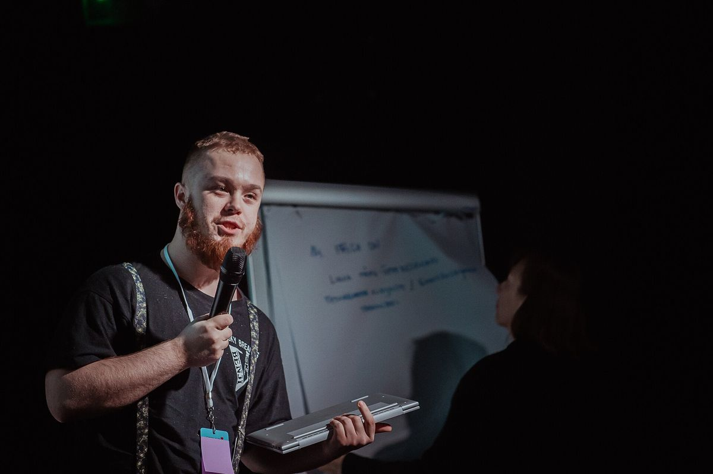
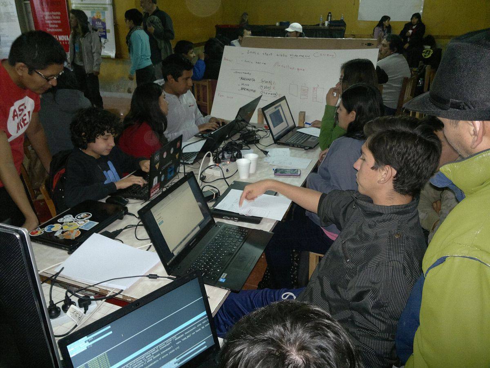
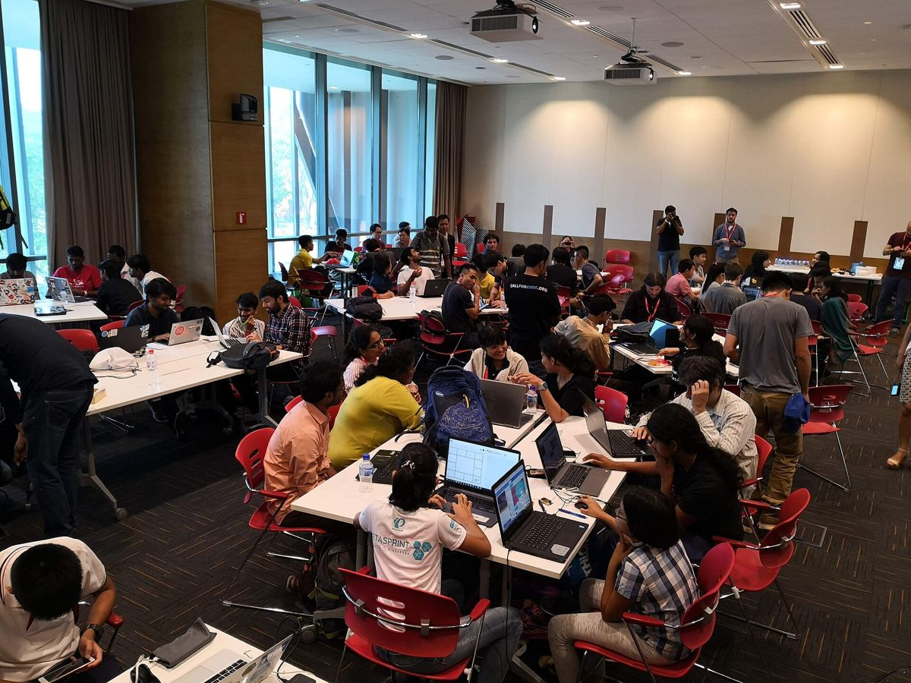
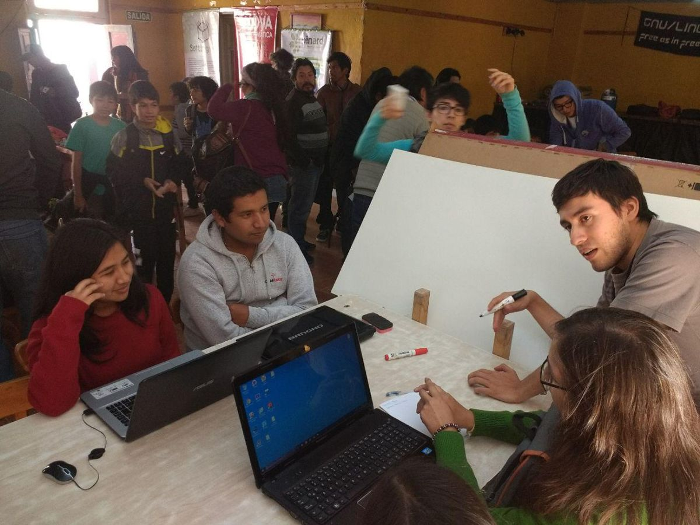
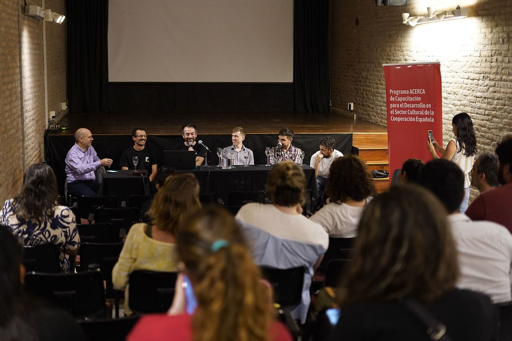

01
Ciencia de datos
Limpieza, análisis exploratorio y estadística. Buenas preguntas antes que modelos grandes.
- pandas
- SQL
- estadística
Comunidad de IA & ciencia de datos · Yucatán, MX
maIAs reúne a quienes aprenden, investigan y construyen con datos en la península. Del machine learning clásico a la IA generativa, con la mirada puesta en nuestra tierra.
01 — La comunidad
maIAs nació en Yucatán para que nadie aprenda inteligencia artificial en soledad. Nos juntamos estudiantes, profesionales, docentes e investigadores para compartir lo que sabemos, equivocarnos juntos y construir proyectos con datos de la península.
Gratuita y para todos los niveles. No necesitas saber programar para llegar.
Problemas, datos y talento de la península. Lo que hacemos se queda aquí.
Fundamentos antes que modas. Medimos, validamos y explicamos.
En español y, cada vez más, en maya.





Fotos ilustrativas de Wikimedia Commons (se reemplazarán por fotos de nuestros eventos): Demo day — Maido Parv, CC BY-SA 4.0 · Talleres — USL Jujuy, CC BY-SA 4.0 · Hackatones — autor desconocido, CC BY-SA 4.0 · Grupos de estudio — Gaelle Berton, CC BY-SA 3.0 · Mentoría — USL Jujuy, CC BY-SA 4.0 · Charlas — CCPERosario, CC BY-SA 4.0.
02 — Áreas
No nos quedamos en la IA generativa. Cubrimos todo el espectro: de los datos crudos al modelo en producción, de la estadística a la visión por computadora.
Limpieza, análisis exploratorio y estadística. Buenas preguntas antes que modelos grandes.
Regresión, clasificación y clustering: los fundamentos que siguen resolviendo la mayoría de los problemas reales.
Redes neuronales desde cero hasta arquitecturas modernas, entendiendo qué pasa adentro.
Detección, segmentación y análisis de imágenes satelitales, de drones y de campo.
PLN en español y en maya yucateco: corpus, traducción y herramientas para una lengua viva.
LLMs, difusión y agentes, usados con criterio y con los pies en la tierra.
Lluvia, calor, turismo, energía: pronosticar lo que importa en la península.
Del notebook al servicio: despliegue, monitoreo y datos versionados.
Dónde queremos aplicarla
Problemas reales de la península, no demos.
＋ Transversal a todo: ética, privacidad y datos abiertos.
03 — Programas
1.0 — Aprende
Meetups, talleres prácticos y rutas de estudio para todos los niveles. Si apenas empiezas con Python o ya entrenas modelos, hay un lugar para ti.
import pandas as pd from sklearn.ensemble import RandomForestRegressor df = pd.read_csv("lluvia_peninsula.csv")
modelo = RandomForestRegressor(n_estimators=300) modelo.fit(X_train, y_train)
2.0 — Construye
Hackatones y proyectos abiertos sobre problemas de la península: agua, campo, salud, turismo y patrimonio. Código que se queda en la comunidad.
3.0 — Comparte
Charlas, divulgación y contenido abierto, en español y en maya. Tendemos puentes entre universidades, empresas y quien tenga curiosidad.
Frases comunes en maya yucateco
04 — Sistema vigesimal
Lo hicieron de forma independiente, con una numeración posicional en base 20: punto, barra y concha. Con ella llevaban cuentas de miles de años. Escribe un número y míralo como lo habrían escrito.
Correlación GMT 584283 · la cuenta inicia en 4 Ajaw 8 Kumk'u, 3114 a. C.
05 — Únete
“Vamos”, en maya yucateco.
Construyamos juntos la IA de Yucatán. Estudiantes, profesionales, academia, empresas o pura curiosidad: hay lugar para ti.